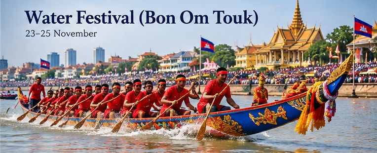

Festivals & Traditions
Cambodia Water Festival (Bon Om Touk): Meaning and Traditions
Boat races, river traditions, and the changing flow of the Tonle Sap

Bon Om Touk, commonly called Cambodia’s Water Festival, is one of the country’s best-known annual celebrations. It is associated with the seasonal reversal of the Tonle Sap River’s flow, the end of the rainy season, boat races, and gatherings along riverside areas. Dates follow the Cambodian calendar and can change each year; check the official holiday schedule before making plans.
1. Why the Tonle Sap flow matters
During the rainy season, water from the Mekong helps fill Tonle Sap Lake. As water levels and river conditions change later in the year, the Tonle Sap River reverses direction and flows back toward the Mekong. This seasonal cycle is central to the festival’s cultural meaning and to the region’s ecology and livelihoods.
2. Traditional boat races
Long, decorated racing boats and teams from different communities are a highlight of the festival. Crowds gather to watch races and cheer for their teams. Race schedules, routes, and safety arrangements depend on the year and local organizers.
3. Moon worship and illuminated floats
Festival traditions can include paying respect to the full moon and the harvest, as well as illuminated boats or floats and evening festivities. Customs vary by place and family, so no single program represents every Cambodian community.
4. Tips for visitors
Arrive early for popular riverside areas, use official transport and event guidance, keep children close in crowds, carry water, and plan for road closures. Avoid entering the river or restricted race zones, and verify dates before booking travel.
Planning note: Public holiday calendars and event arrangements can change. Confirm the current year’s dates and official notices before planning travel or relying on a closure.
How the Tonle Sap River changes direction
The Water Festival is closely linked to a striking feature of Cambodia’s waterways. During the rainy season, heavy monsoon rainfall raises the level of the Mekong. Water is pushed into the Tonle Sap River and lake system, causing the river’s flow to reverse and the lake to expand substantially. As the rainy season ends and Mekong water levels fall, the Tonle Sap River begins flowing back toward the Mekong. This seasonal cycle supports a rich freshwater ecosystem and has shaped livelihoods around fishing, farming, and transport.
The festival brings this natural cycle into public view, but it is not simply a celebration of a river. It also reflects how closely Cambodian life has long been connected to water, seasonal weather, food production, and shared community work. The precise river conditions depend on rainfall and other environmental factors, so the timing of the natural reversal should not be treated as identical every year.
Boat races, teamwork, and community identity
Longboat racing is one of the festival’s best-known features. Teams train together and row in rhythm, often representing a community, institution, or province. The boats may be decorated, and spectators gather along riverbanks to cheer. The races are both a competition and a public display of coordination, endurance, and cooperation.
Although Phnom Penh’s riverside celebrations attract substantial attention, water-related festivities and boat races may also take place in other communities. The scale and program vary by location and year. A cancelled or shortened program does not change the festival’s cultural significance, and visitors should always check current announcements before travelling.
Moon observances and traditional foods
Bon Om Touk is often discussed alongside moon-related traditions such as Sampeah Preah Khe and the preparation of ambok, or flattened rice. In some families, ambok is served with ingredients such as banana and coconut. These customs connect the celebration with the harvest season, gratitude, and hopes for well-being. Practices differ between households and communities, so a short guide cannot represent every local tradition.
Evening activities may include illuminated boats and public gatherings near the water. These scenes can be memorable, but they also draw crowds. Visitors should keep to public viewing areas, follow event staff instructions, and avoid restricted river zones or boat-launch areas.
Practical advice for visiting during the festival
If you plan to visit Phnom Penh, check the official dates, transport updates, and event announcements before booking. Popular riverfront areas can become crowded, and some streets may be closed to vehicles. Arriving early can make it easier to find a safe viewing place. Agree on a meeting point if travelling with family or friends, keep children close, and bring drinking water and weather-appropriate clothing.
Do not assume that fireworks, boat races, concerts, or every other activity will happen every year. Public programs can change because of safety, weather, or official decisions. Use local authority guidance for road closures and safety arrangements, and avoid entering the river or restricted zones to take photographs.
Why the Water Festival matters beyond tourism
The festival offers a chance to learn about the relationship between people and the Tonle Sap–Mekong system. The lake and river support fisheries, agriculture, transport, and communities whose daily routines respond to changing water levels. Understanding this context makes the festival more meaningful than viewing it only as a large public event.
Visitors can show respect by learning a little about the traditions before attending, following local guidance, disposing of rubbish responsibly, and recognizing that the river is a working ecosystem as well as a place for celebration.
Sources and further reading
- Cambodia Ministry of Tourism: Festivals — overview of the Water and Moon Festival and seasonal river flow.
- Tourism Cambodia: Visit Cambodia’s Water Festival — explanation of the Tonle Sap flow reversal and festival traditions.
- Cambodia Ministry of Tourism: Tonle Sap — background on the lake and its importance to local livelihoods.
Use official announcements for current dates and event details; general descriptions of the festival do not confirm the program for a particular year.
Frequently asked questions
When is Bon Om Touk held?
It usually takes place around the full moon of the Buddhist month of Kadeuk, often in November, but the dates vary by year.
Why is it called the Water Festival?
It is closely associated with the seasonal reversal of the Tonle Sap River and celebrations around the waterways.
Are boat races held every year?
Boat races are a central tradition, but the actual event program can vary; check official announcements for the current year.
Explore more: Cambodian Public Holidays · Coronation Day · Khmer Calendar
← Back to the MyBirthSign Blogពិធីបុណ្យ និងប្រពៃណី
ព្រះរាជពិធីបុណ្យអុំទូក
ការប្រណាំងទូក ប្រពៃណីទាក់ទងនឹងទន្លេ និងលំហូរទឹកទន្លេសាបដែលប្រែប្រួល
ព្រះរាជពិធីបុណ្យអុំទូក បណ្តែតប្រទីប និងសំពះព្រះខែ អកអំបុក ដែលគេច្រើនហៅថា បុណ្យទឹករបស់កម្ពុជា គឺជាពិធីបុណ្យប្រចាំឆ្នាំដ៏ល្បីល្បាញបំផុតមួយរបស់ប្រទេស។ ព្រះរាជពិធីនេះផ្សារភ្ជាប់នឹងការប្រែទិសលំហូរទឹកទន្លេសាបតាមរដូវកាល ការបញ្ចប់រដូវវស្សា ការប្រណាំងទូក និងការជួបជុំគ្នានៅតាមមាត់ទន្លេ។ កាលបរិច្ឆេទប្រារព្ធតាមប្រតិទិនកម្ពុជា ហើយអាចផ្លាស់ប្តូររៀងរាល់ឆ្នាំ។ សូមពិនិត្យកាលវិភាគថ្ងៃឈប់សម្រាកផ្លូវការ មុននឹងរៀបចំផែនការ។
1. ហេតុអ្វីលំហូរទឹកទន្លេសាបមានសារៈសំខាន់
ក្នុងរដូវវស្សា ទឹកពីទន្លេមេគង្គជួយបំពេញបឹងទន្លេសាប។ នៅពេលកម្រិតទឹក និងស្ថានភាពទន្លេប្រែប្រួលនៅរយៈពេលក្រោយមកក្នុងឆ្នាំ ទន្លេសាបប្រែទិស ហើយហូរត្រឡប់ទៅទន្លេមេគង្គវិញ។ វដ្តតាមរដូវកាលនេះ ជាស្នូលនៃអត្ថន័យវប្បធម៌របស់ពិធីបុណ្យ ព្រមទាំងជាស្នូលនៃប្រព័ន្ធអេកូឡូស៊ី និងជីវភាពរស់នៅក្នុងតំបន់។
2. ការប្រណាំងទូកតាមប្រពៃណី
ទូកប្រណាំងដ៏វែងដែលតុបតែងលម្អ និងក្រុមអ្នកអុំមកពីសហគមន៍ផ្សេងៗ គឺជាចំណុចទាក់ទាញដ៏សំខាន់នៃពិធីបុណ្យនេះ។ ហ្វូងមនុស្សជួបជុំគ្នាមើលការប្រណាំង និងលើកទឹកចិត្តក្រុមរបស់ខ្លួន។ កាលវិភាគប្រណាំង ផ្លូវប្រណាំង និងការរៀបចំសុវត្ថិភាព អាស្រ័យលើឆ្នាំនីមួយៗ និងអ្នករៀបចំនៅមូលដ្ឋាន។
3. ការសំពះព្រះខែ និងប្រទីបបណ្តែតទឹក
ប្រពៃណីនៃពិធីបុណ្យនេះ អាចរួមមានការគោរពព្រះខែពេញបូណ៌មី និងរដូវប្រមូលផល ព្រមទាំងទូកប្រទីប ឬប្រទីបបណ្តែតទឹក និងការកម្សាន្តនានានៅពេលល្ងាច។ ទំនៀមទម្លាប់ខុសគ្នាតាមទីកន្លែង និងតាមគ្រួសារ ដូច្នេះគ្មានកម្មវិធីតែមួយណាដែលតំណាងឱ្យគ្រប់សហគមន៍កម្ពុជាបានទេ។
4. គន្លឹះសម្រាប់អ្នកទស្សនា
សូមមកដល់ឱ្យបានឆាប់ សម្រាប់តំបន់មាត់ទន្លេដែលមានមនុស្សនិយមទៅច្រើន ធ្វើតាមការណែនាំផ្លូវការស្តីពីការធ្វើដំណើរ និងកម្មវិធី នៅជិតកូនៗពេលនៅកន្លែងមនុស្សច្រើន យកទឹកផឹកតាមខ្លួន និងគ្រោងទុកសម្រាប់ការបិទផ្លូវ។ ជៀសវាងការចុះទៅក្នុងទន្លេ ឬចូលតំបន់ប្រណាំងដែលហាមឃាត់ ហើយផ្ទៀងផ្ទាត់កាលបរិច្ឆេទមុននឹងកក់ការធ្វើដំណើរ។
ចំណាំសម្រាប់ការរៀបចំផែនការ៖ ប្រតិទិនថ្ងៃឈប់សម្រាកសាធារណៈ និងការរៀបចំកម្មវិធីនានា អាចមានការផ្លាស់ប្តូរ។ សូមផ្ទៀងផ្ទាត់កាលបរិច្ឆេទ និងសេចក្តីជូនដំណឹងផ្លូវការសម្រាប់ឆ្នាំបច្ចុប្បន្ន មុននឹងរៀបចំការធ្វើដំណើរ ឬរំពឹងថាកន្លែងណាមួយនឹងបិទ។
របៀបដែលទន្លេសាបប្រែទិសលំហូរ
ព្រះរាជពិធីបុណ្យអុំទូក មានទំនាក់ទំនងយ៉ាងជិតស្និទ្ធជាមួយលក្ខណៈពិសេសដ៏គួរឱ្យចាប់អារម្មណ៍មួយនៃប្រព័ន្ធផ្លូវទឹករបស់កម្ពុជា។ ក្នុងរដូវវស្សា ទឹកភ្លៀងខ្យល់មូសុងដ៏ច្រើន ធ្វើឱ្យកម្រិតទឹកទន្លេមេគង្គកើនឡើង។ ទឹកត្រូវបានរុញចូលទៅក្នុងប្រព័ន្ធទន្លេសាប និងបឹងទន្លេសាប ដែលធ្វើឱ្យលំហូរទឹកទន្លេប្រែទិស ហើយបឹងរីកធំទូលាយយ៉ាងខ្លាំង។ នៅពេលរដូវវស្សាបញ្ចប់ ហើយកម្រិតទឹកទន្លេមេគង្គស្រកចុះ ទន្លេសាបចាប់ផ្តើមហូរត្រឡប់ទៅទន្លេមេគង្គវិញ។ វដ្តតាមរដូវកាលនេះ ទ្រទ្រង់ប្រព័ន្ធអេកូឡូស៊ីទឹកសាបដ៏សម្បូរបែប ហើយបានរួមចំណែកកំណត់ជីវភាពរស់នៅ ដែលពឹងផ្អែកលើការនេសាទ កសិកម្ម និងការដឹកជញ្ជូន។
ពិធីបុណ្យនេះ នាំវដ្តធម្មជាតិនេះមកបង្ហាញជាសាធារណៈ ប៉ុន្តែវាមិនមែនគ្រាន់តែជាការអបអរទន្លេមួយប៉ុណ្ណោះទេ។ វាក៏ឆ្លុះបញ្ចាំងពីរបៀបដែលជីវិតរបស់ប្រជាជនកម្ពុជា បានផ្សារភ្ជាប់យ៉ាងជិតស្និទ្ធជាយូរមកហើយ ជាមួយទឹក អាកាសធាតុតាមរដូវកាល ការផលិតស្បៀងអាហារ និងការងាររួមគ្នាក្នុងសហគមន៍។ ស្ថានភាពទន្លេពិតប្រាកដ អាស្រ័យលើបរិមាណទឹកភ្លៀង និងកត្តាបរិស្ថានផ្សេងៗទៀត ដូច្នេះមិនគួរចាត់ទុកថា ពេលវេលានៃការប្រែទិសតាមធម្មជាតិ ដូចគ្នារៀងរាល់ឆ្នាំនោះទេ។
ការប្រណាំងទូក ការងារជាក្រុម និងអត្តសញ្ញាណសហគមន៍
ការប្រណាំងទូកង គឺជាលក្ខណៈពិសេសដ៏ល្បីបំផុតមួយនៃពិធីបុណ្យនេះ។ ក្រុមអ្នកអុំហ្វឹកហាត់ជាមួយគ្នា ហើយអុំទូកតាមចង្វាក់តែមួយ ដោយជារឿយៗតំណាងឱ្យសហគមន៍ ស្ថាប័ន ឬខេត្តណាមួយ។ ទូកអាចត្រូវបានតុបតែងលម្អ ហើយអ្នកទស្សនាជួបជុំគ្នាតាមមាត់ច្រាំងទន្លេ ដើម្បីលើកទឹកចិត្ត។ ការប្រណាំងនេះ ជាទាំងការប្រកួតប្រជែង និងជាការបង្ហាញជាសាធារណៈនូវការសម្របសម្រួលគ្នា កម្លាំងស៊ូទ្រាំ និងកិច្ចសហការ។
ទោះបីជាការប្រារព្ធនៅមាត់ទន្លេក្នុងរាជធានីភ្នំពេញ ទាក់ទាញការចាប់អារម្មណ៍យ៉ាងច្រើនក៏ដោយ ក៏ពិធីបុណ្យពាក់ព័ន្ធនឹងទឹក និងការប្រណាំងទូក អាចប្រព្រឹត្តទៅនៅតាមសហគមន៍ផ្សេងៗទៀតដែរ។ ទំហំ និងកម្មវិធីប្រែប្រួលតាមទីកន្លែង និងតាមឆ្នាំ។ ការលុបចោល ឬការកាត់បន្ថយកម្មវិធី មិនផ្លាស់ប្តូរសារៈសំខាន់ផ្នែកវប្បធម៌នៃពិធីបុណ្យនេះទេ ហើយអ្នកទស្សនាគួរតែពិនិត្យសេចក្តីជូនដំណឹងថ្មីៗជានិច្ច មុននឹងធ្វើដំណើរ។
ការសំពះព្រះខែ និងម្ហូបអាហារប្រពៃណី
បុណ្យអុំទូក ច្រើនត្រូវបានលើកឡើងជាមួយប្រពៃណីពាក់ព័ន្ធនឹងព្រះខែ ដូចជាពិធីសំពះព្រះខែ និងការធ្វើអំបុក ដែលជាស្រូវដំបុកឱ្យសំប៉ែត។ ក្នុងគ្រួសារខ្លះ គេទទួលទានអំបុកជាមួយគ្រឿងផ្សំ ដូចជាចេក និងដូង។ ទំនៀមទម្លាប់ទាំងនេះ ភ្ជាប់ពិធីបុណ្យនេះទៅនឹងរដូវប្រមូលផល ការដឹងគុណ និងក្តីសង្ឃឹមចំពោះសេចក្តីសុខ។ ការអនុវត្តខុសគ្នាពីផ្ទះមួយទៅផ្ទះមួយ និងពីសហគមន៍មួយទៅសហគមន៍មួយ ដូច្នេះអត្ថបទណែនាំខ្លីមួយ មិនអាចតំណាងឱ្យគ្រប់ប្រពៃណីក្នុងមូលដ្ឋាននីមួយៗបានទេ។
សកម្មភាពពេលល្ងាច អាចរួមមានទូកប្រទីប និងការជួបជុំសាធារណៈនៅក្បែរទឹក។ ទិដ្ឋភាពទាំងនេះអាចជាអនុស្សាវរីយ៍ដែលមិនងាយបំភ្លេច ប៉ុន្តែក៏ទាក់ទាញហ្វូងមនុស្សច្រើនផងដែរ។ អ្នកទស្សនាគួរនៅក្នុងតំបន់ទស្សនាសាធារណៈ ធ្វើតាមការណែនាំរបស់បុគ្គលិកកម្មវិធី និងជៀសវាងតំបន់ទន្លេដែលហាមឃាត់ ឬកន្លែងដាក់ទូកចុះទឹក។
ដំបូន្មានជាក់ស្តែងសម្រាប់ការមកលេងក្នុងអំឡុងពិធីបុណ្យ
ប្រសិនបើអ្នកគ្រោងមកលេងរាជធានីភ្នំពេញ សូមពិនិត្យកាលបរិច្ឆេទផ្លូវការ ព័ត៌មានថ្មីៗអំពីការធ្វើដំណើរ និងសេចក្តីជូនដំណឹងអំពីកម្មវិធី មុននឹងធ្វើការកក់។ តំបន់មាត់ទន្លេដែលពេញនិយម អាចមានមនុស្សកកកុញ ហើយផ្លូវខ្លះអាចត្រូវបានបិទមិនឱ្យយានយន្តឆ្លងកាត់។ ការមកដល់ឱ្យបានឆាប់ អាចជួយឱ្យអ្នករកកន្លែងទស្សនាដែលមានសុវត្ថិភាពបានងាយស្រួលជាង។ ប្រសិនបើធ្វើដំណើរជាមួយគ្រួសារ ឬមិត្តភក្តិ សូមព្រមព្រៀងគ្នាអំពីកន្លែងជួបជុំ នៅជិតកូនៗ និងយកទឹកផឹក ព្រមទាំងសម្លៀកបំពាក់ដែលសមស្របនឹងអាកាសធាតុតាមខ្លួន។
កុំសន្មតថា ការបាញ់កាំជ្រួច ការប្រណាំងទូក ការប្រគុំតន្ត្រី ឬសកម្មភាពផ្សេងៗទៀតទាំងអស់ នឹងប្រព្រឹត្តទៅរៀងរាល់ឆ្នាំនោះទេ។ កម្មវិធីសាធារណៈអាចផ្លាស់ប្តូរដោយសារហេតុផលសុវត្ថិភាព អាកាសធាតុ ឬការសម្រេចចិត្តជាផ្លូវការ។ សូមប្រើការណែនាំរបស់អាជ្ញាធរមូលដ្ឋាន ស្តីពីការបិទផ្លូវ និងការរៀបចំសុវត្ថិភាព ហើយជៀសវាងការចុះទៅក្នុងទន្លេ ឬចូលតំបន់ហាមឃាត់ ដើម្បីថតរូប។
ហេតុអ្វីព្រះរាជពិធីបុណ្យអុំទូក មានសារៈសំខាន់លើសពីវិស័យទេសចរណ៍
ពិធីបុណ្យនេះ ផ្តល់ឱកាសដើម្បីស្វែងយល់អំពីទំនាក់ទំនងរវាងមនុស្ស និងប្រព័ន្ធទន្លេសាប–មេគង្គ។ បឹង និងទន្លេ ទ្រទ្រង់ការនេសាទ កសិកម្ម ការដឹកជញ្ជូន និងសហគមន៍ដែលទម្លាប់រស់នៅប្រចាំថ្ងៃរបស់ពួកគេ ប្រែប្រួលទៅតាមកម្រិតទឹក។ ការយល់ពីបរិបទនេះ ធ្វើឱ្យពិធីបុណ្យមានអត្ថន័យកាន់តែជ្រាលជ្រៅ ជាជាងមើលវាត្រឹមតែជាព្រឹត្តិការណ៍សាធារណៈដ៏ធំមួយប៉ុណ្ណោះ។
អ្នកទស្សនាអាចបង្ហាញការគោរព ដោយស្វែងយល់បន្តិចបន្តួចអំពីប្រពៃណី មុននឹងចូលរួម ធ្វើតាមការណែនាំក្នុងមូលដ្ឋាន បោះចោលសំរាមដោយទំនួលខុសត្រូវ និងទទួលស្គាល់ថា ទន្លេគឺជាប្រព័ន្ធអេកូឡូស៊ីដែលមនុស្សពឹងផ្អែកជារៀងរាល់ថ្ងៃ ក៏ដូចជាជាកន្លែងសម្រាប់ការប្រារព្ធពិធីបុណ្យ។
ប្រភព និងឯកសារអានបន្ថែម
- Cambodia Ministry of Tourism: Festivals — ទិដ្ឋភាពទូទៅអំពីពិធីបុណ្យអុំទូក និងសំពះព្រះខែ ព្រមទាំងលំហូរទឹកទន្លេតាមរដូវកាល។
- Tourism Cambodia: Visit Cambodia’s Water Festival — ការពន្យល់អំពីការប្រែទិសលំហូរទឹកទន្លេសាប និងប្រពៃណីនៃពិធីបុណ្យ។
- Cambodia Ministry of Tourism: Tonle Sap — ព័ត៌មានសាវតាអំពីបឹងទន្លេសាប និងសារៈសំខាន់របស់វាចំពោះជីវភាពរស់នៅរបស់ប្រជាជនក្នុងតំបន់។
សូមប្រើសេចក្តីជូនដំណឹងផ្លូវការ សម្រាប់កាលបរិច្ឆេទបច្ចុប្បន្ន និងព័ត៌មានលម្អិតអំពីកម្មវិធី។ ការពិពណ៌នាទូទៅអំពីពិធីបុណ្យ មិនមែនជាការបញ្ជាក់អំពីកម្មវិធីសម្រាប់ឆ្នាំណាមួយជាក់លាក់នោះទេ។
សំណួរដែលគេសួរញឹកញាប់
តើព្រះរាជពិធីបុណ្យអុំទូក ប្រារព្ធនៅពេលណា?
ជាធម្មតា ព្រះរាជពិធីនេះប្រារព្ធនៅជុំវិញថ្ងៃពេញបូណ៌មី ខែកត្តិក តាមប្រតិទិនព្រះពុទ្ធសាសនា ដែលច្រើនតែធ្លាក់ក្នុងខែវិច្ឆិកា ប៉ុន្តែកាលបរិច្ឆេទប្រែប្រួលតាមឆ្នាំ។
ហេតុអ្វីបានជាគេហៅថា បុណ្យទឹក?
ព្រោះពិធីបុណ្យនេះ ផ្សារភ្ជាប់យ៉ាងជិតស្និទ្ធនឹងការប្រែទិសលំហូរទឹកទន្លេសាបតាមរដូវកាល និងការប្រារព្ធពិធីនៅតាមផ្លូវទឹកនានា។
តើការប្រណាំងទូកមានរៀងរាល់ឆ្នាំឬទេ?
ការប្រណាំងទូកគឺជាប្រពៃណីស្នូល ប៉ុន្តែកម្មវិធីជាក់ស្តែងអាចប្រែប្រួល។ សូមពិនិត្យសេចក្តីជូនដំណឹងផ្លូវការសម្រាប់ឆ្នាំបច្ចុប្បន្ន។
អានបន្ថែម៖ ថ្ងៃឈប់សម្រាកសាធារណៈនៅកម្ពុជា · ព្រះរាជពិធីគ្រងព្រះបរមរាជសម្បត្តិ · ប្រតិទិនខ្មែរ
← ត្រឡប់ទៅប្លុក MyBirthSign